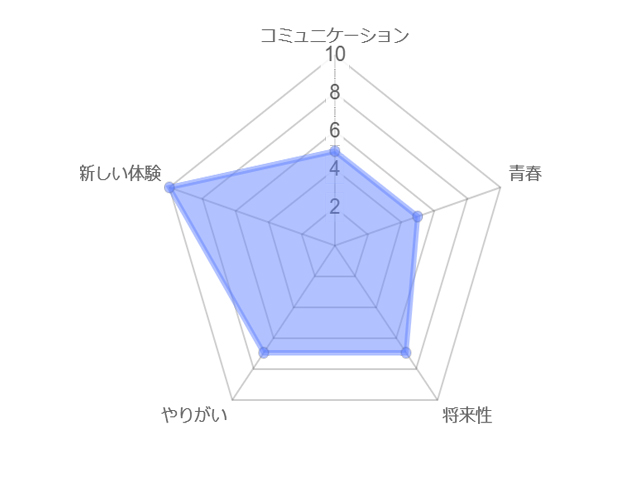

大阪研修
大都市大阪の大企業に潜入！
一般公開されていない超貴重なオフィスを見学！
最先端テクノロジーを目に焼き付けよう！！
大阪研修は、情報ビジネス学科唯一の泊まりで行うぎょうじです！毎年、リコージャパンやNECといった大企業にお邪魔し、画像解析や音声認識といった最先端な技術を体験できます。
また、ゲーム形式で仕事を模擬的に体験することもできます。実際に働いている方のお話を聞き、仕事をするイメージを沸かせられることでしょう。時期的にも、就活の始める第一歩としてとてもいいきっかけになると思います！
さらに、夜はまるっと自由時間！眠らない街大阪を存分に体験しよう！(もちろん常識の範囲内でね☆)
ぎょうじの特徴が一目でがわかる！レーダーチャート
参加者の声
|
|
NECさんに行って未来の技術を見ることができた。 |
|
|
リコーでゲーム形式で実際の仕事をたいけんできたのがよかった。 |
|
|
夜の自由時間が楽しかった。 |
イベント概要
| 研修場所 | 大阪府大阪市 |
|---|---|
| 研修日時 | 毎年秋頃 |
| 期間 | 一泊二日 |
| 研修先 | リコージャパン、NECなど |
| 服装 | リクルートスーツ |
| 交通手段 | バス |
オープンキャンパスへGO!
オープンキャンパスにお越しいただけたら、過去の大阪研修の写真や映像を楽しむことができます！